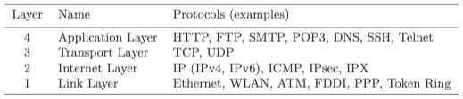
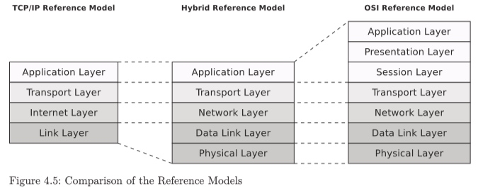

Reference Models
Because of the many requirements that computer networks need to satisfy, communication in into these is subdivided into layers within reference models. The three popular reference models are the TCP/IP model, the OSI reference model and hybrid reference model.
1. TCP/IP Reference Model
It divides the tasks of communication into four consecutive layers. For each one of the four layers, multiple protocols do exist.

Each layer adds additional header information to the message (see Figure 4.1). Some protocols (e.g., Ethernet) add not only a header in the Link Layer but also a trailer at the end of the message. The receiver analyzes the header (and trailer) on the same layer (see Figure 4.2).


Hybrid reference model is an extension of the TCP/IP model split the Link Layer (Network Access Layer) into two layers because they have entirely different tasks.
2. Hybrid Reference Model
The names of the top two layers and the tasks of the top three layers are identical to the layers of the TCP/IP reference model (see Figure 4.3). The Internet Layer in the TCP/IP reference model and the Network Layer in the hybrid reference model differ only in the name.

2.1 Data Link Layer (4th Layer)
DDL do these tasks:
- Controlling the access to the transmission medium.
- At the sender, the DDL packs the (Network Layer) packets into frames and transmits them with the desired reliability from one network device to another via a physical network.
- At the receiver, the DDL identifies the frames in the bit stream of the Physical Layer.
- The delivery of frames on a physical network requires physical addresses (MAC address), whose format defines the DLL.
- Detecting errors occur during the frames transmission, the DLL protocols attach a checksum to every frame, frames with errors can detected and thrown away by the receiver.
- In the Data Link Layer, frames can only be exchanged between network devices that are connected to the same physical network. For different physical networks: done by using Bridges and Switches (Multiport Bridges).
2.2 Physical Layer (5th Layer)
- The Physical Layer deals with the characteristics of the various transmission media.
- This layer is responsible for the transfer of ones and zeros.
- Here, the physical connection to the medium and the conversion of the data into signals takes place.
- Protocols of the physical layer define how many bits can be sent per second and whether the transmission can take place simultaneously in both directions.
2.3 Network Layer (= 3rd Layer = Internet Layer in TCP/IP model)
NL does these tasks:
- forward packets between logical networks over physical network segments. For this internetworking, the network layer defines logical addresses (IP addresses).
- At the sender, the NL packs the segments of the Transport Layer into packets. At the receiver, the Network Layer detects and unpacks the Packets in the frames of the DDL.
- Routers limit logical subnets. Forwarding packets on their way from the sender to the destination, which is called routing, is one task of this layer. Usually, the connectionless Internet Protocol (IP) is used. Each IP packet is independently routed to its destination, and the path is not recorded. Other Network Layer protocols such as IPX have been replaced mainly by IP.
2.4 Transport Layer
The Transport Layer enables the transport of Segments between processes on different devices via so-called end-to-end protocols. At the sender, the Transport Layer packs the data of the Application Layer into segments. At the receiver, the Transport Layer detects and unpacks the segments inside the packets from the Network Layer. While the Data Link Layer and the Network Layer address network devices in a physical way, in this layer the running processes are addressed with port numbers. The Transport Layer, therefore, ensures that the data in the Network Layer is delivered correctly to the correct applications. It splits the data at the sender, using Transport Layer protocols, into smaller parts (segments), which the protocol of the Network Layer can forward. The size of the segments corresponds to the maximum size of the payload of a packet in the Network Layer.
Transport Layer protocols implement different forms of communication. Connectionless communication works analogously to a mailbox. The sender sends messages without prior connection establishment. With connectionless communication, the Transport Layer does not provide a way to validate that a segment arrives at the destination. If validation is required, it must be carried out in the Application Layer. The lack of a delivery guarantee is one disadvantage of this form of communication. One benefit is the better data rate because less overhead arises.
One alternative is using connection-oriented communication. This works in the same way as the telephone. A connection is established between sender and receiver before data is exchanged. The connection remains active even if no data is transferred. As soon as all data has been exchanged, one of the communication partners terminates the connection.
Connection-oriented communication enables flow control and congestion control, in which the receiver controls the transmission speed of the sender. Depending on the Transport Layer protocol used, the Transport Layer also ensures loss-free delivery of the segments. This is equivalent to a delivery guarantee. The correct order of the segments at the receiver is also guaranteed by this form of communication.
Examples of Transport Layer protocols are the connectionless User Datagram Protocol (UDP) and the connection-oriented Transport Control Protocol (TCP).
2.5 Application Layer
The Application Layer contains all protocols that interact with the user application programs (e.g., browser or email client). Here, the messages (e.g., HTML pages or emails) are located according to the respective Application Layer protocol. Examples: HTTP, FTP, SMTP, POP3, DNS, SSH, and Telnet.
3. How Communication works
The communication flow is demonstrated by using the hybrid reference model (see Figure 4.4).

Vertical communication describes the process in which the data passes through the layers of the reference model used. A message is packed layer by layer from the top layer to the bottom layer and extracted by the receiver in the reverse order from the bottom layer to the top layer. The sender adds a header to the data in each layer and a trailer in the Data Link Layer. These additional headers and trailers are analyzed and removed in the respective layers by the receiver. These operations are called encapsulation and de-encapsulation.
In horizontal communication, sender and receiver each use the same protocol functions on the same layers (see Figure 4.2).
4. OSI Reference Model
